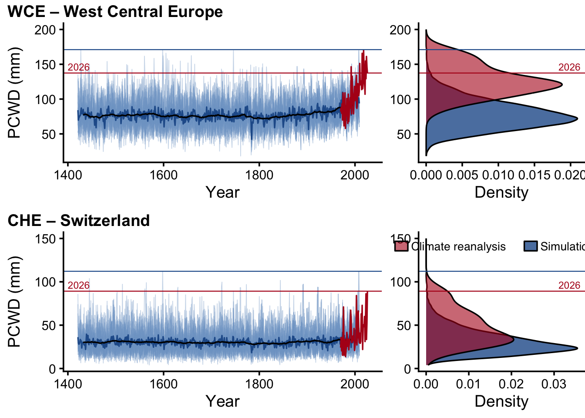
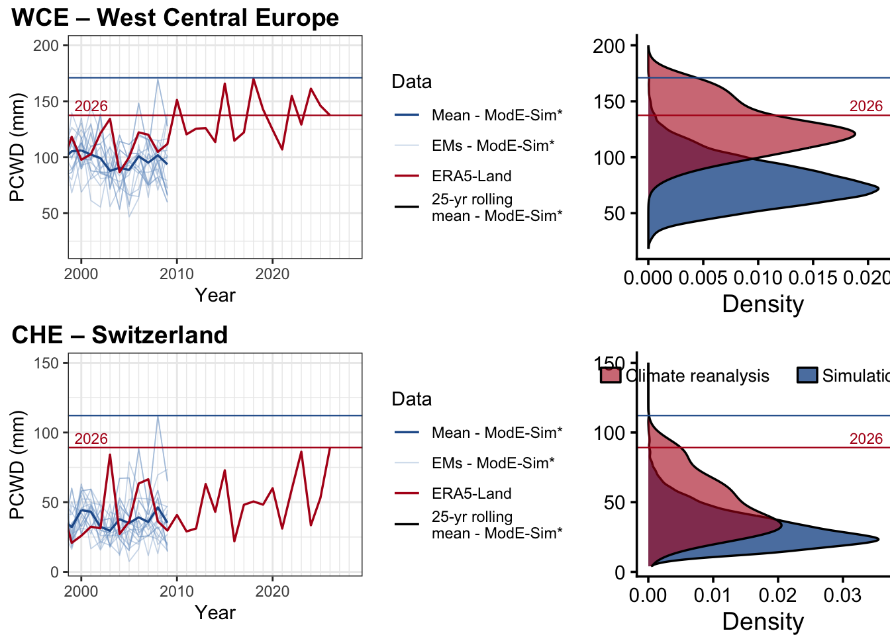

Code
era5_combined_26 <- readRDS(
here("data/regional_results_ERA5Land_cons_incl26.rds")
)
corrected_full <- readRDS(
here("data/regionalResults_ModESim_bc.RData")
)Run ERA5Land_vs_ModESim_forPressRelease.Rmd first to generate the input files.
era5_combined_26 <- readRDS(
here("data/regional_results_ERA5Land_cons_incl26.rds")
)
corrected_full <- readRDS(
here("data/regionalResults_ModESim_bc.RData")
)mode_years <- 1420:2009
era5_years <- 1970:2026
window_size <- 25L
half_window <- (window_size - 1) / 2
calculate_rolling_means <- function(mode_matrix, region) {
ensemble_members <- mode_matrix[2:590, , drop = FALSE]
number_of_windows <- nrow(ensemble_members) - window_size + 1
rolling_matrix <- t(vapply(
seq_len(number_of_windows),
function(start_index) {
end_index <- start_index + window_size - 1
colMeans(
ensemble_members[start_index:end_index, , drop = FALSE],
na.rm = TRUE
)
},
numeric(ncol(ensemble_members))
))
rolling_centers <-
seq(min(mode_years), max(mode_years) - window_size + 1) + half_window
rolling_matrix |>
as.data.frame() |>
mutate(
time = rolling_centers[seq_len(nrow(rolling_matrix))],
region = region
) |>
pivot_longer(
cols = -c(time, region),
names_to = "ensemble_member",
values_to = "rolling_mean"
)
}
rolling_means_long <- corrected_full |>
imap(calculate_rolling_means) |>
list_rbind()prepare_region_data <- function(
region,
corrected_full,
era5_combined_26,
mode_years = 1420:2009,
era5_years = 1970:2026,
drop_initial_years = 2L
) {
mode_matrix <- corrected_full[[region]]
era5_values <- era5_combined_26[[region]]
stopifnot(
nrow(mode_matrix) == length(mode_years),
length(era5_values) == length(era5_years)
)
mode_long <- mode_matrix |>
as.data.frame() |>
mutate(time = mode_years) |>
pivot_longer(
cols = -time,
names_to = "ensemble",
values_to = "PCWD"
) |>
filter(time >= mode_years[[drop_initial_years]])
mode_mean <- mode_long |>
group_by(time) |>
summarise(PCWD = mean(PCWD, na.rm = TRUE), .groups = "drop")
era5_data <- tibble(time = era5_years, PCWD = era5_values)
era5_modern <- era5_data |>
filter(between(time, 2000, 2026))
pcwd_2026 <- era5_data |>
filter(time == 2026) |>
pull(PCWD)
list(
mode_long = mode_long,
mode_mean = mode_mean,
era5_data = era5_data,
era5_modern = era5_modern,
pcwd_2026 = pcwd_2026
)
}get_pcwd_y_limits <- function(region_code, pcwd_values) {
upper_limit <- if (region_code == "CHE") 150 else 200
c(min(pcwd_values, na.rm = TRUE), upper_limit)
}
get_pcwd_y_breaks <- function(region_code, y_limits) {
if (region_code == "CHE") {
seq(0, 150, by = 50)
} else {
pretty(y_limits, n = 6)
}
}plot_region_pcwd_ts <- function(region_code) {
data <- prepare_region_data(
region_code,
corrected_full,
era5_combined_26
)
rolling_mean <- rolling_means_long |>
filter(region == region_code) |>
group_by(time) |>
summarise(
mean_rolling = mean(rolling_mean, na.rm = TRUE),
.groups = "drop"
)
y_limits <- get_pcwd_y_limits(region_code, data$mode_long$PCWD)
common_breaks <- get_pcwd_y_breaks(region_code, y_limits)
record_pcwd <- max(data$mode_long$PCWD, na.rm = TRUE)
ggplot() +
geom_line(
data = data$mode_long,
aes(
x = time,
y = PCWD,
group = ensemble,
color = "ensemble_members"
),
linewidth = 0.3,
alpha = 0.4
) +
geom_line(
data = data$mode_mean,
aes(x = time, y = PCWD, color = "ensemble_mean"),
linewidth = 0.6
) +
geom_line(
data = rolling_mean,
aes(x = time, y = mean_rolling, color = "rolling_mean"),
linewidth = 0.6
) +
geom_line(
data = data$era5_data,
aes(x = time, y = PCWD, color = "era5_land"),
linewidth = 0.6
) +
geom_hline(
yintercept = record_pcwd,
color = "#255C99",
linewidth = 0.4
) +
geom_hline(
yintercept = data$pcwd_2026,
color = "#B3001B",
linewidth = 0.4
) +
annotate(
"text",
x = -Inf,
y = data$pcwd_2026,
label = "2026",
color = "#B3001B",
size = 3,
hjust = -0.2,
vjust = -0.4
) +
scale_y_continuous(limits = y_limits, breaks = common_breaks) +
scale_color_manual(
name = "Data",
values = c(
ensemble_members = "#7EA3CC",
ensemble_mean = "#255C99",
rolling_mean = "black",
era5_land = "#B3001B"
),
labels = c(
ensemble_members = "EMs - ModE-Sim*",
ensemble_mean = "Mean - ModE-Sim*",
rolling_mean = "25-yr rolling\nmean - ModE-Sim*",
era5_land = "ERA5-Land"
)
) +
labs(x = "Year", y = "PCWD (mm)", color = "Data") +
theme_classic(base_size = 14) +
theme(
axis.title.y = element_text(margin = margin(r = 10)),
legend.position = "none",
legend.title = element_text(face = "bold")
)
}plot_region_pcwd_density <- function(
region_code,
show_legend = region_code == "CHE"
) {
data <- prepare_region_data(
region_code,
corrected_full,
era5_combined_26
)
y_limits <- get_pcwd_y_limits(region_code, data$mode_long$PCWD)
common_breaks <- get_pcwd_y_breaks(region_code, y_limits)
record_pcwd <- max(data$mode_long$PCWD, na.rm = TRUE)
density_plot <- ggplot() +
geom_density(
data = data$mode_long,
aes(
x = after_stat(density),
y = PCWD,
fill = "mode_sim_based"
),
alpha = 0.8,
linewidth = 0.6,
trim = FALSE
) +
geom_density(
data = data$era5_modern,
aes(
x = after_stat(density),
y = PCWD,
fill = "era5_2000_2026"
),
alpha = 0.6,
linewidth = 0.6,
trim = FALSE
) +
geom_hline(
yintercept = record_pcwd,
color = "#255C99",
linewidth = 0.4
) +
geom_hline(
yintercept = data$pcwd_2026,
color = "#B3001B",
linewidth = 0.4
) +
annotate(
"text",
x = Inf,
y = data$pcwd_2026,
label = "2026",
color = "#B3001B",
size = 3,
hjust = 1.2,
vjust = -0.4
) +
scale_fill_manual(
name = NULL,
breaks = c("era5_2000_2026", "mode_sim_based"),
values = c(
mode_sim_based = "#255C99",
era5_2000_2026 = "#B3001B"
),
labels = c(
era5_2000_2026 = "Climate reanalysis",
mode_sim_based = "Simulations"
)
) +
scale_y_continuous(limits = y_limits, breaks = common_breaks) +
labs(x = "Density", y = NULL) +
theme_classic(base_size = 14) +
theme(
axis.title.y = element_text(margin = margin(r = 10)),
legend.key = element_rect(fill = NA, colour = NA),
legend.position = "none",
legend.title = element_text(face = "bold"),
plot.title = element_text(hjust = 0.5, face = "bold"),
text = element_text(size = 14)
)
if (show_legend) {
density_plot +
guides(fill = guide_legend(nrow = 1, byrow = TRUE)) +
theme(
legend.background = element_blank(),
legend.direction = "horizontal",
legend.justification = c(0.5, 0.5),
legend.key.height = grid::unit(0.35, "cm"),
legend.key.width = grid::unit(0.45, "cm"),
legend.margin = margin(0),
legend.position = "inside",
legend.position.inside = c(0.5, 0.9),
legend.spacing.x = grid::unit(0.08, "cm"),
legend.text = element_text(
family = "Helvetica",
size = 10,
margin = margin(l = 2, r = 8)
)
)
} else {
density_plot
}
}region_codes <- c("WCE", "CHE")
panel_labels <- c(
"WCE – West Central Europe",
"",
"CHE – Switzerland",
""
)
region_titles <- c(
WCE = "WCE – West Central Europe",
CHE = "CHE – Switzerland"
)
build_pcwd_figure <- function(zoom = FALSE) {
time_series_plots <- map(region_codes, plot_region_pcwd_ts)
if (zoom) {
time_series_plots <- map(
time_series_plots,
~ .x +
coord_cartesian(xlim = c(2000, 2028)) +
scale_x_continuous(
"Year",
minor_breaks = 2000:2028
) +
theme_bw()
)
}
density_plots <- region_codes |>
map(plot_region_pcwd_density) |>
map(~ .x + theme(plot.margin = margin(t = 20)))
panel_plots <- map2(time_series_plots, density_plots, list) |>
list_flatten()
plot_grid(
plotlist = panel_plots,
ncol = 2,
align = "h",
axis = "tb",
labels = panel_labels,
label_x = 0.02,
label_y = 0.975,
hjust = 0,
vjust = 1,
rel_widths = c(2, 1)
)
}
build_region_pcwd_figure <- function(region_code) {
stopifnot(region_code %in% names(region_titles))
time_series_plot <- plot_region_pcwd_ts(region_code)
density_plot <- plot_region_pcwd_density(
region_code,
show_legend = TRUE
) +
theme(plot.margin = margin(t = 20))
plot_grid(
time_series_plot,
density_plot,
ncol = 2,
align = "h",
axis = "tb",
labels = c(region_titles[[region_code]], ""),
label_x = 0.02,
label_y = 0.975,
hjust = 0,
vjust = 1,
rel_widths = c(2, 1)
)
}
save_pcwd_figure <- function(plot, filename, height = 5) {
ggsave(
filename = here("figures", filename),
plot = plot,
device = cairo_pdf,
width = 10,
height = height,
dpi = 300,
bg = "white"
)
}pcwd_figure <- build_pcwd_figure()
print(pcwd_figure)
save_pcwd_figure(
pcwd_figure,
"Annmax_PCWD_Timeseries_Density_WCEW_CHE_Fig.pdf"
)
pcwd_figure_zoom <- build_pcwd_figure(zoom = TRUE)
print(pcwd_figure_zoom)
save_pcwd_figure(
pcwd_figure_zoom,
"Annmax_PCWD_Timeseries_Density_WCEW_CHE_Fig_zoom2026.pdf"
)
pcwd_figure_wce <- build_region_pcwd_figure("WCE")
save_pcwd_figure(
pcwd_figure_wce,
"PCWD_WCE.pdf",
height = 3
)
pcwd_figure_che <- build_region_pcwd_figure("CHE")
save_pcwd_figure(
pcwd_figure_che,
"PCWD_CHE.pdf",
height = 3
)The empirical quantile is the proportion of values in a distribution that are less than or equal to the ERA5-Land 2026 PCWD. The climate-reanalysis distribution covers 2000-2026, matching the red density, while the simulation distribution contains the ModE-Sim* member-year values shown in blue.
calculate_2026_percentiles <- function(region_code) {
data <- prepare_region_data(
region_code,
corrected_full,
era5_combined_26
)
tibble(
region = region_code,
distribution = c(
"Climate reanalysis (ERA5-Land, 2000-2026)",
"Simulations (ModE-Sim*, 1421-2009)"
),
number_of_values = c(
sum(!is.na(data$era5_modern$PCWD)),
sum(!is.na(data$mode_long$PCWD))
),
pcwd_2026_mm = data$pcwd_2026,
quantile = c(
mean(
data$era5_modern$PCWD <= data$pcwd_2026,
na.rm = TRUE
),
mean(
data$mode_long$PCWD <= data$pcwd_2026,
na.rm = TRUE
)
)
)
}
percentiles_2026 <- region_codes |>
map(calculate_2026_percentiles) |>
list_rbind() |>
mutate(percentile = 100 * quantile)
percentile_table <- percentiles_2026 |>
transmute(
Region = recode(region, WCE = "West Central Europe", CHE = "Switzerland"),
Distribution = distribution,
N = number_of_values,
`2026 PCWD (mm)` = sprintf("%.1f", pcwd_2026_mm),
Quantile = sprintf("%.4f", quantile),
Percentile = sprintf("%.1f%%", percentile)
)
knitr::kable(
percentile_table,
align = c("l", "l", "r", "r", "r", "r"),
caption = "Empirical position of the 2026 PCWD in each displayed distribution."
)| Region | Distribution | N | 2026 PCWD (mm) | Quantile | Percentile |
|---|---|---|---|---|---|
| West Central Europe | Climate reanalysis (ERA5-Land, 2000-2026) | 27 | 137.4 | 0.7407 | 74.1% |
| West Central Europe | Simulations (ModE-Sim*, 1421-2009) | 11780 | 137.4 | 0.9941 | 99.4% |
| Switzerland | Climate reanalysis (ERA5-Land, 2000-2026) | 27 | 89.2 | 1.0000 | 100.0% |
| Switzerland | Simulations (ModE-Sim*, 1421-2009) | 11780 | 89.2 | 0.9980 | 99.8% |
ERA5-Land entries are annual values. ModE-Sim* entries are individual ensemble-member and year combinations from the blue distribution.
calculate_top_10_pcwd <- function(region_code) {
data <- prepare_region_data(
region_code,
corrected_full,
era5_combined_26
)
era5_top_10 <- data$era5_data |>
slice_max(order_by = PCWD, n = 10, with_ties = FALSE) |>
arrange(desc(PCWD)) |>
transmute(
region = region_code,
data_source = "ERA5-Land",
rank = row_number(),
year = time,
ensemble_member = "-",
pcwd_mm = PCWD
)
mode_top_10 <- data$mode_long |>
slice_max(order_by = PCWD, n = 10, with_ties = FALSE) |>
arrange(desc(PCWD)) |>
transmute(
region = region_code,
data_source = "ModE-Sim*",
rank = row_number(),
year = time,
ensemble_member = ensemble,
pcwd_mm = PCWD
)
bind_rows(era5_top_10, mode_top_10)
}
top_10_pcwd <- region_codes |>
map(calculate_top_10_pcwd) |>
list_rbind()region_names <- c(
WCE = "West Central Europe",
CHE = "Switzerland"
)
for (region_code in region_codes) {
for (source in c("ERA5-Land", "ModE-Sim*")) {
cat(
"### ", region_names[[region_code]], " - ", source, "\n\n",
sep = ""
)
table_data <- top_10_pcwd |>
filter(region == region_code, data_source == source) |>
transmute(
Rank = rank,
Year = year,
`Ensemble member` = ensemble_member,
`PCWD (mm)` = round(pcwd_mm, 1)
)
print(knitr::kable(table_data, align = c("r", "r", "c", "r")))
cat("\n\n")
}
}| Rank | Year | Ensemble member | PCWD (mm) |
|---|---|---|---|
| 1 | 2018 | - | 170.0 |
| 2 | 2015 | - | 165.8 |
| 3 | 2024 | - | 161.2 |
| 4 | 2022 | - | 154.7 |
| 5 | 2010 | - | 151.2 |
| 6 | 1992 | - | 146.4 |
| 7 | 2025 | - | 146.0 |
| 8 | 2019 | - | 142.7 |
| 9 | 2026 | - | 137.4 |
| 10 | 2003 | - | 134.3 |
| Rank | Year | Ensemble member | PCWD (mm) |
|---|---|---|---|
| 1 | 1598 | m012_tidy | 171.0 |
| 2 | 1427 | m015_tidy | 170.1 |
| 3 | 1746 | m002_tidy | 169.7 |
| 4 | 2008 | m002_tidy | 169.6 |
| 5 | 2008 | m012_tidy | 169.6 |
| 6 | 1605 | m016_tidy | 166.0 |
| 7 | 1658 | m006_tidy | 162.4 |
| 8 | 1599 | m002_tidy | 162.2 |
| 9 | 1560 | m004_tidy | 161.7 |
| 10 | 1580 | m012_tidy | 158.6 |
| Rank | Year | Ensemble member | PCWD (mm) |
|---|---|---|---|
| 1 | 2026 | - | 89.2 |
| 2 | 2023 | - | 86.2 |
| 3 | 2003 | - | 84.1 |
| 4 | 2015 | - | 72.9 |
| 5 | 1976 | - | 71.0 |
| 6 | 1991 | - | 67.3 |
| 7 | 2007 | - | 66.4 |
| 8 | 2006 | - | 63.4 |
| 9 | 2013 | - | 63.0 |
| 10 | 2020 | - | 60.0 |
| Rank | Year | Ensemble member | PCWD (mm) |
|---|---|---|---|
| 1 | 1598 | m012_tidy | 112.2 |
| 2 | 2008 | m002_tidy | 112.1 |
| 3 | 2008 | m012_tidy | 112.1 |
| 4 | 1445 | m012_tidy | 103.8 |
| 5 | 1844 | m006_tidy | 101.7 |
| 6 | 1722 | m004_tidy | 99.7 |
| 7 | 1564 | m002_tidy | 99.0 |
| 8 | 1892 | m002_tidy | 97.3 |
| 9 | 1892 | m012_tidy | 97.3 |
| 10 | 1514 | m004_tidy | 97.2 |